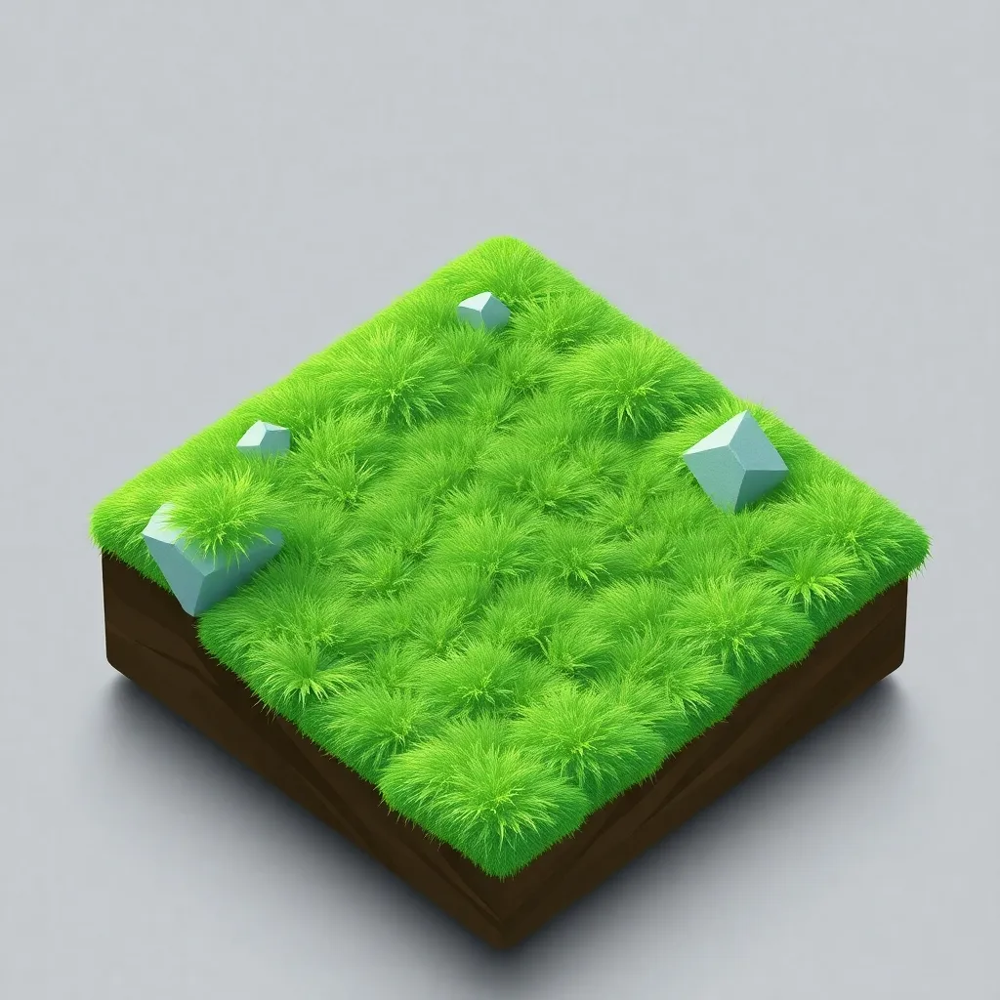
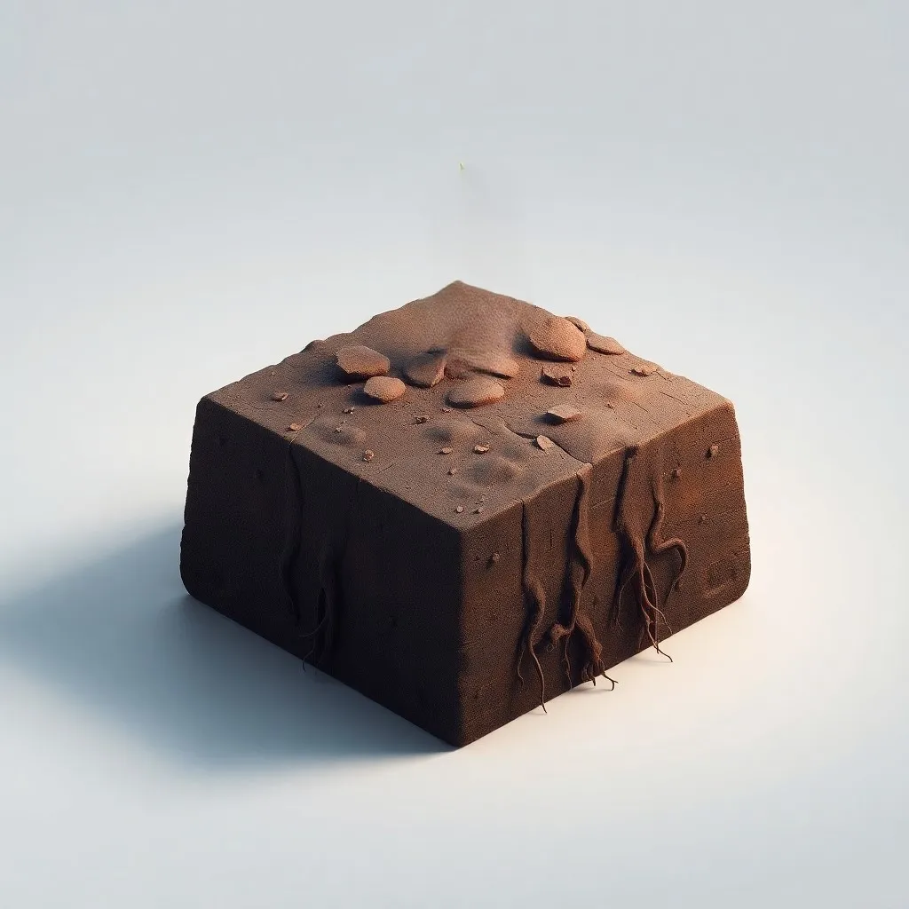
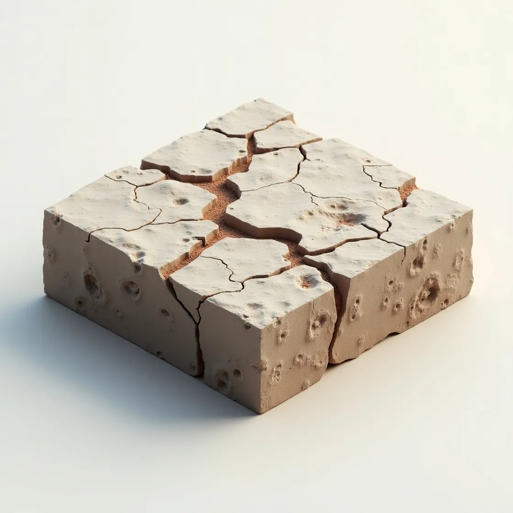
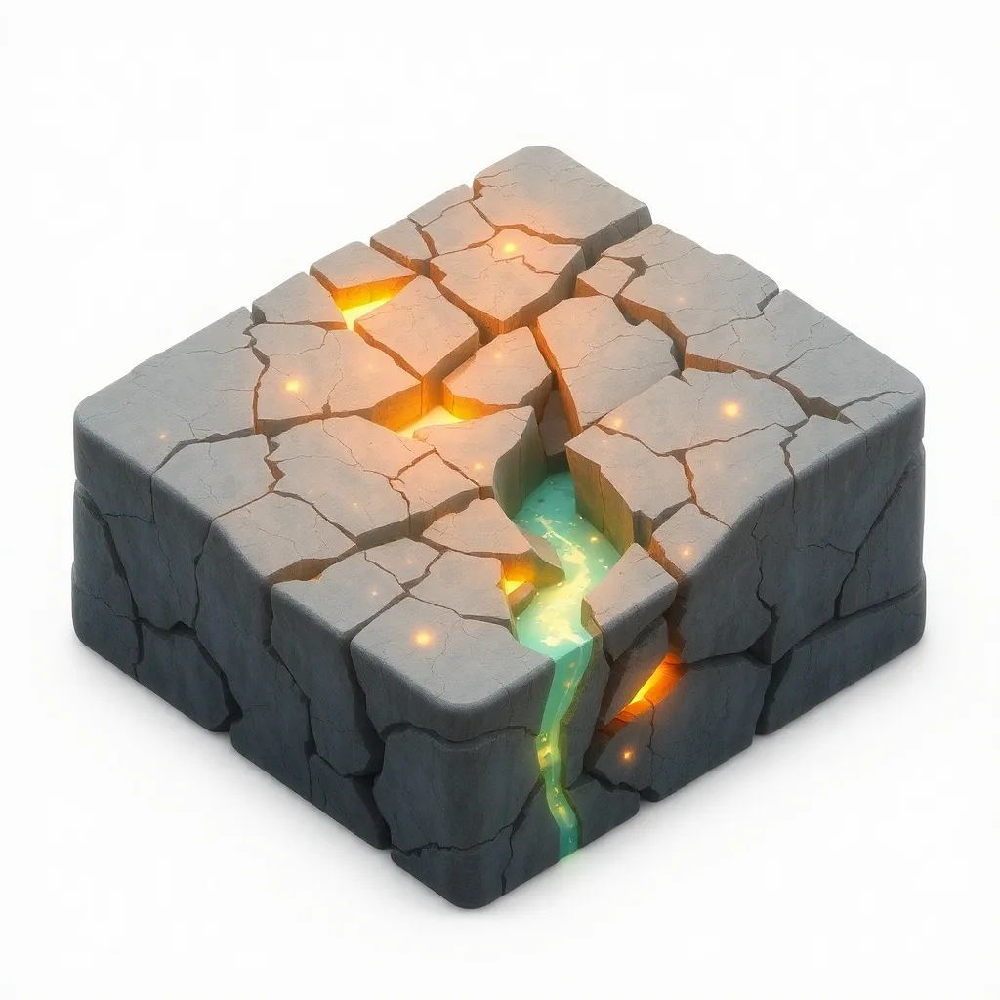

The topmost layer of soil, rich in decomposed organic matter, acting as nature's recycling bin.
💡 Fact: A single teaspoon of humus-rich soil contains more microbes than there are people on Earth! 🌍
The uppermost mineral soil layer where most plant roots grow and biological activity thrives.
💡 Fact: 95% of the world’s food comes from the thin layer of topsoil, yet it’s disappearing 10 times faster than it can regenerate! ⏳
A denser, mineral-rich layer beneath the topsoil that stores water and nutrients for deep-rooted plants.
💡 Fact: Some tree roots grow over 30 meters (100 feet) deep into subsoil to find water during droughts! 🌳
The partially weathered layer of rock that serves as the foundation for soil formation.
💡 Fact: Some of the world’s oldest rocks, over 4 billion years old, are found in parent rock layers! ⏳
The solid, unweathered rock layer beneath all soil layers, forming the Earth's foundation.
💡 Fact: Skyscrapers, bridges, and even entire cities are anchored into bedrock for stability! 🏗️